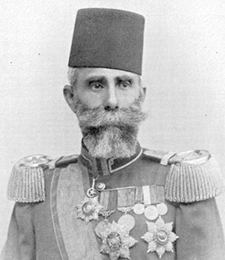

Mahmud Þevket Paþa (1856-1913)

31 Mart Olayý’nda Rumeli’den Ýstanbul’a gelen meþhur Hareket Ordusunun komutaný olan Mahmut Þevket Paþa, deðiþik askeri ve siyasi görevlerde bulunmuþ; Harp Okulunda ders vermiþtir. 31 Mart Olayý’ndan sonra Ýstanbul’a gelerek þehirde sýkýyönetim ilan etmiþ ve çok sert tedbirlere baþvurmuþtur. Mahkemede idam cezasýna çarptýrýlanlarýn onayýndan geçmesiyle bir çok kiþinin cezasý infaz edilmiþtir. Balkan Savaþlarýnda komuta edeceði mevkii beðenmediði için görevi reddetmiþtir. Ýttihat ve Terakki Cemiyeti sayesinde yýldýzý parlamýþ, Harbiye Nazýrlýðý yaptýktan sonra Sadaret makamýnda da bulunmuþtur. Ürküntü veren çehresi, asabi ve sert mizacýyla tanýnmýþtýr. Divan-ý Harb-i Örfi’de yargýlanýp beraat eden Bediüzzaman, Paþa’nýn kendisine karþý çok hiddetli olduðundan bahsetmiþtir.Mahmud Þevket Paþa, 1856 yýlýnda Baðdat’ta doðdu. Babasý, Çeçen asýllý olan Kethüdazade Süleyman Bey’dir. Baðdat’ta bulunan askeri rüþtiyede bir yýl okuduktan sonra Ýstanbul Üsküdar Atlamataþý askeri okuluna devam etti. Bu okuldan sonra Kuleli Askeri Ýdadisine devam etti. Bu okuldan mezun olduktan sonra Harp Okuluna girerek 1878 yýlýnda mezun oldu.
Mahmud Þevket Paþa, 1880 yýlýndan itibaren Erkan-ý Harb Dairesi Tercüme Bürosu’nda çalýþmaya baþladý. Ayrýca Harp Okulunda bazý dersleri okuttu. Bazý dergilere yazýlar yazdý ve tercümelerini yayýnlattý. Bu sýralarda ülkemizde bulunan ve Harp Okulunu ýslah çalýþmalarýný yürüten Goltz Paþa’nýn yardýmcýlýðýnda da bulundu.
Osmanlý Devleti’nin ihtiyaç duyduðu silahlarýn alýnmasý ile ilgilenecek komisyonda görev aldý. Vidinli Tevfik Paþa baþkanlýðýnda kurulan komisyonda iken, Almanya ve Fransa’ya inceleme amaçlý bir seyahatte bulundu. Satýn alýnacak silahlarýn alýmýnda aktif rol aldý. Uzun süre Almanya’da bulundu. 1901 yýlýnda Mekke ve Medine arasýnda tesis edilecek telgraf hattýnýn yapýlmasý iþine atandý. Ancak, bu görevi sürgüne gönderilme olarak algýladýðýndan Sultan Abdülhamid’e karþý duygularýnda deðiþme oldu.
Mahmud Þevket Paþa, altý-yedi ay kadar Hicaz bölgesinde bulunduktan sonra Ýstanbul’a, önceki vazifesine döndü. 1905 yýlýnda Kosova Valiliði’ne atandý. Valiliði sýrasýnda Ýttihat ve Terakki Cemiyeti ile yakýn temasta bulundu. Cemiyetin çalýþmalarýna göz yumdu. Bir süre Üçüncü Ordu Komutanlýðý’nda da bulunduktan sonra, siyasi alanda faaliyette bulunacaðý geliþmelerin içinde yer almaya baþladý. 31 Mart Olayý meydana geldikten sonra, Hareket Ordusunun baþýnda Ýstanbul’a geldi.
Ýstanbul’a gelen Mahmud Þevket Paþa, þehirde sýkýyönetim ilan etti. Bu arada meydana gelen önemli geliþmelerin merkezinde yer aldý. Sultan Abdülhamid’in tahttan indirilerek Sultan Reþad’ýn yerine çýkarýlmasý olayýnda etkili oldu. Ordu müfettiþlikleri görevlerine de getirildi ve giderek etki alaný geniþledi. Þehirde otoritesini saðlamaya çalýþýrken çok sert tedbirlere baþ vurmaktan çekinmedi.
Mahmud Þevket Paþa, hükümet ve meclis üzerinde baský kurdu. Kurulan Ýbrahim Hakký Paþa hükümetinde Harbiye Nazýrlýðý’na getirildi. Daha önceden sürdürdüðü Birinci, Ýkinci ve Üçüncü Ordu Müfettiþliklerini býrakmadý. II. Meþrutiyetin ilanýndan sonra iç ve dýþ olaylar hýzla geliþti. Arnavutluk isyaný ve sert þekilde bastýrýlmasý, Yemen isyanýný bastýrmak için Trablusgarp’tan asker gönderilmesi, Trablusgarp’ýn korunmasýz kalmasýna paralel olarak Ýtalya’nýn burayý iþgal giriþimi ve çýkan savaþ Osmanlý baþkentinde þiddetli siyasi sarsýntýlara yol açtý.
Ýç ve dýþ olaylar hükümetlerin çalýþmasýný da olumsuz yönde etkilediðinden çok sýk olarak hükümet deðiþiklikleri yaþandý. Mahmud Þevket Paþa, Said Paþa kabinesinde de Harbiye Nazýrlýðý’na getirildi. Bir süre sonra bu görevinden istifa etti. Bu arada Balkan Savaþlarý baþladý. Alasonya Ordusu Kumandanlýðý’na getirilmek istendiyse de bu görevi kabul etmedi. Savaþ sonrasýnda maðlubiyetin müsebbipleri arasýnda gösterilerek çok sert bir þekilde eleþtirildi.
Tarihimize, “Bab-ý Ali Baskýný” olarak geçen hadisede Kamil Paþa Ýttihat ve Terakki’nin baskýsýyla sadaretten uzaklaþtýrýldý (23 Ocak 1913). Onun yerine sadaretle birlikte Harbiye Nazýrlýðý’ný da üstlenen Mahmud Þevket Paþa geçti. Önceleri Ýttihat ve Terakki ile beraber hareket ettiyse de bir süre sonra kendi istekleri doðrultusunda hareket etmeye baþladý. Cemiyetle aralarý yeniden açýlmaya baþladý.
Ýttihat ve Terakki ile iktidar paylaþýmýndan hoþlanmayan ve buna izin vermeyen Mahmud Þevket Paþa arasýnda cereyan eden sürtüþme giderek büyüdü. Cemiyet tarafýndan bir tehdit olarak algýlanmaya baþlandý. Diðer taraftan sert tutumundan dolayý diðer muhalif guruplarýn da eleþtirilerine hedef oldu. Kendisine karþý suikast düzenleneceðine dair haberlere fazla itibar etmedi. 11 Haziran 1913 günü Harbiye Nezareti’nden Sadarete gitmek üzere yola çýktý. Çarþýkapý yakýnlarýnda uðradýðý silahlý saldýrý sonucu öldürüldü. Olayý tertipleyenler yakalanarak idam edildi.
Sadrazamlýða kadar yükselen Mahmud Þevket Paþa, Ýttihatçý olmakla birlikte iktidar paylaþýmýnda Cemiyetle anlaþamadý. Kendi iktidarýna müdahale etmedikleri oranda Cemiyete yakýn durdu. Bunun dýþýnda aralarýnda þiddetli sürtüþmeler yaþandý. Ýki kez bulunduðu Harbiye Nazýrlýðýnda Cemiyetin baskýsý sonucu istifa etmek zorunda kaldý. Çehresi ürküntü veren, asabi ve sert mizaçlý biri olarak tanýndý (Zekeriya Türkmen, “Mahumd Þevket Paþa, TDVÝA., 27. C., Ankara 2003, s. 386). Sadaret makamýnda bulunduðu sýrada hiç yapýlmamasý gereken bir olayý gerçekleþtirerek, bazý devlet sýrlarýnýn padiþahtan gizlenmesi emrini bizzat kendisi verdi (Ýlber Ortaylý, Milliyet, 06.10.2002).
31 Mart Olayý’ndan sonra Hareket Ordusu’nun baþýnda Ýstanbul’a girdiði zaman bazý yazarlar tarafýndan “II. Fatih”, “Napolyon” ve “Mithat Paþa” gibi unvanlarla methedildi. Öldürülme olayýnýn arkasýnda Ýngilizlerin olduðu, Sadarette bulunduðu takdirde Birinci Dünya Savaþýna girmekte o kadar aceleci davranmayacaðý ve Araplar ile ilgili politikada daha esnek davranacaðý da belirtilir.
Risale-i Nur’da, Mahmud Þevket Paþa’nýn Hareket Ordusu Baþkumandaný olarak ismi zikredilmektedir. 31 Mart Olayý’ndan sonra kurulan mahkemelerde yargýlanacak insanlar öncelikle Mahmut Þevket Paþa imzasýyla mahkemelere gönderilmiþtir. Bilahare yargýlanarak Padiþahýn onayýna sunulmuþtur. Bu uygulama ile çok sayýda kiþi idam cezasýna çarptýrýlmýþtýr. Bediüzzaman da Divan-ý Harb-i Örfi’de yargýlanýrken, Mahmud Þevket Paþa’nýn kendisine karþý çok hiddetli olduðunu belirtmekte ve mahkeme reisi Hurþid Paþa’nýn, “Sen þeriatý istedin mi? Ýþte þeriatý isteyenler böyle asýlýrlar” (Emirdað Lahikasý, 1997, s. 214) þeklindeki ifadelerine yer vermektedir. Hurþid Paþa’nýn “þeriatý isteyenler” diye Bediüzzaman’a gösterdiði, o sýrada idam edilip henüz daraðacýnda asýlý duran on beþ kadar kiþi idi. Bediüzzaman da, “Þeriatýn bir meselesine bin ruhum olsa feda ederim” diyerek mukabelede bulundu ve mahkeme sonunda beraat etti.